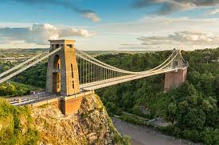
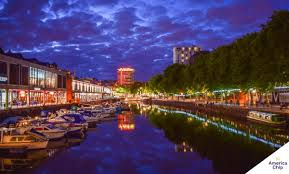
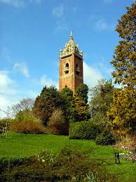
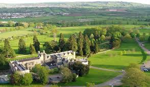
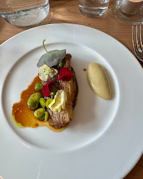
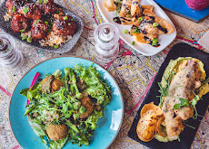

Bristol é considerada uma das cidades mais sustentáveis do Reino Unido e foi eleita Capital Verde da Europa. A cidade investe em transporte sustentável, energia renovável e preservação de áreas verdes urbanas.

Clifton Suspension Bridge, uma das pontes mais famosas da Inglaterra.

Harbourside Bristol com museus, cultura e arquitetura histórica.

Brandon Hill Park, um dos parques mais antigos da cidade.

Ashton Court Estate com trilhas naturais e áreas verdes.

Restaurantes focados em ingredientes orgânicos.

Culinária britânica moderna com produtos locais.